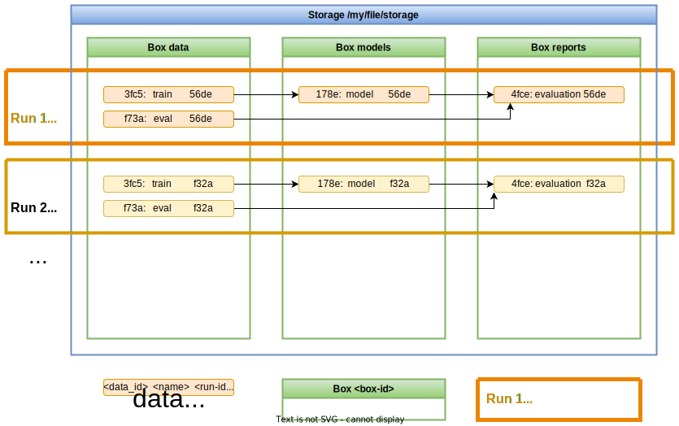

User guide🔗
This user guide can be used as a starting point for getting a deeper understanding of the inner workings of the boxs library. It is meant for users who want to learn about individual details or who plan to extend its features by developing own value types or transformers.
Data organization🔗
Boxs keeps track of data items and their dependencies that are created when executing
python code. Data items are identified by some automatic derived data_id, but for
easier usage user-defined unique names within a single run are supported, too.
Each execution leads to a new set of data items without overwriting anything. This
allows to compare them across different "runs". All data items are organized in
"Boxes", that can be used for grouping together related items. Multiple Boxes can share
a single Storage, which actually stores the data and their meta-data.

Each individual data item can be referenced by 3 different ids:
- box_id: The id of the box, in which the data item is stored.
- data_id: The id identifying the same data entity across multiple runs.
- run_id: The id that identifies the run in which this data item was created.
Warning
Boxs treats all data as immutable. Once written, a data item can't be updated.
Instead a new data item with a different run_id should be used. Even though
deleting a run and reusing its run_id is possible, it is HIGHLY discouraged
since doing so can lead to inconsistencies especially with dependency tracking
across different runs.
User API🔗
Boxs user API can be imported from the boxs package. All classes and functions that
are meant for users, are importable from the top level package.
store()🔗
boxs.store()
is the function that stores an actual value. It takes a couple of
arguments, that influence where the data is stored, how the value is serialized, how
its data id is calculated and what additional meta-data should be stored along with
it.
The full signature of the method looks like this:
def store(
value,
*parents,
name=None,
origin=ORIGIN_FROM_FUNCTION_NAME,
tags=None,
meta=None,
value_type=None,
run_id=None,
box=None
) -> boxs.DataInfo:
boxs.DataInfo.
This type contains a reference to the stored data, which allows to load it again at a
later time, and some additional meta information about it, including how it was stored.
store() arguments are described as follows:
value🔗
value contains the data that should be stored. Out of the box, boxs supports natively
a couple of different types that can be stored:
- String
- Bytes/Bytebuffer
- Stream
- Files or
directories in form of
pathlib.Path
With some limitation it can store lists and dicts, too, as long as every contained
value can be serialized to JSON without the need of a custom
JSONEncoder.
All other types of values can be stored either by explicitly setting the value_type
argument or adding one that supports this type to the box which will contain the value.
*parents🔗
Boxs supports tracking dependencies between different values. This can be helpful e.g.
when trying to understand the impact of changes in complex situations or when data is
reused from different runs.
Adding already stored data items as parents to a new data item is done by providing
them as additional positional arguments to the store() call, e.g.:
import boxs
...
def fetch_data():
...
data = boxs.store(data_values, box='my-box-id', name='data')
return data
def partition_data(data):
...
train_data = boxs.store(train_values, data, box='my-box-id', name='train_data')
eval_data = boxs.store(eval_value, data, box='my-box-id', name='eval_data')
return train_data, eval_data
...
data = fetch_data()
train_data, eval_data = partition_data(data)
In this example the second function partition_data(data) stores two new data items
train_data and eval_data using data as a parent data item.
origin=ORIGIN_FROM_FUNCTION_NAME,🔗
Stored data items are referenced by a data_id, that is automatically derived from the
origin of the data, defined by this keyword argument, and their parents. The origin is
meant to describe in textual fashion, where some data originated. Its argument value
can be either a str, or a Callable that returns a string. As a default, a callable
is used, that extracts the name of the function from the stack, where store() is
called from.
The callable can optionally take a OriginContext
object, from whose attributes the origin can be constructed. For more information take a
look at the type of the OriginMappingFunction.
name=None🔗
Referencing all data just from its automatically generated data_id is not the most
convenient way for users. With every new dependency or some changes to the origin the
data id changes to something completely different, so it becomes hard to keep track of
things. To alleviate this, data items can be named by providing a value for the name
keyword argument when storing the data. These names have to be unique within a run and
can be used to refer to a specific data item from the command line. As a default, no
names are given.
tags=None🔗
Often it can be helpful to group data items by some criteria. This is why one can assign a set of tags to each data item when storing new data. These tags are mappings from string keys to string values. The tags can later be used for listing data items or determine how they should be handled. As a default, no tags are used.
meta=None🔗
The meta keyword argument is meant for storing arbitrary meta-data about the item
that might be useful later. This can be things like information about the size or
source of data, e.g. a date which tells the update date of its data source. In general,
all keys in meta must be strings. The values can differ, though. It can be any of
the types that are supported by the python JSON encoder, so even dicts and lists can be
used, as long as all values they contain can be serialized to JSON.
Boxs uses the same meta-data internally, for keeping track of the type of the value as
well as some useful information like checksums or size of the data. So when inspecting
the meta attribute of a data item, not only user-defined meta-data is shown.
value_type=None🔗
ValueTypes
are the mechanism that allows to store values in the first place. In
order to know, how to serialize and deserialize a specific value, boxs needs a
corresponding value type. For a set of common used types, boxs has a predefined list
of value types that are used, e.g. for files, strings, bytes or stream, so the
value_type argument doesn't need to be set and can stay on its default None. For
custom types though, a value_type has to be provided.
run_id=None🔗
Boxs automatically generates a new run_id every time, it is run in a new process.
This run_id allows to correlate the version of a specific data item to a single
invocation of the script, that created the data. There might be situations, where the
user wants to override this automatic mechanism and do a manual run_id management. In
this case, providing a custom run_id will override the automatically generated one.
box=None🔗
Boxs organizes data in collections, called "boxes". This keyword argument can be used
for specifying, in which box the data should be stored. Its value can be either a
str with the box_id of the box, or the Box object itself. If no box is
specified, the default_box from
the configuration is used. Since a box is required, a ValueError is raised, if no box
is specified neither as keyword argument nor in the configuration.
load()🔗
Once a value has been stored, the question is now, how to load it once we need to use
it again. For this boxs provides a boxs.load() function,
that takes a reference to the data item and returns the stored value, that can be of
any type.
def load(data, value_type=None) -> Any:
data🔗
The data item whose value should be loaded. data can be of the two types,
either boxs.data.DataInfo or
boxs.data.DataRef.
DataInfo is the type returned by the store() method. It contains information about
the data item, how it was stored and its ancestors. In contrast, DataRef contains
only the necessary ids for uniquely identifying a data item.
Both, DataInfo and DataRef provide a load() method just for convenience, that
internally use theboxs.load() function.
value_type=None🔗
The ValueType
to use for converting the stored data to a python value. Usually, this
doesn't need to be provided and can be left as its default None, since when storing
of a value, the used value_type is added to the meta-data of the item, so that the same
value_type can be reused, when the value is loaded again.
Sometimes though, a user wants to use a different value type when loading data. In
this case the value_type provided explicitly when calling load() can override the
value type that is stored with the value.
info()🔗
info() returns the DataInfo about a data item from its DataRef reference.
This function is usually not called directly, because it is more convenient to use the
corresponding property DataRef.info that uses the
info() function internally.
ValueType🔗
Within a python script different types of data are used. In order to know, how these
different values can be stored and loaded, boxs uses the concept of
ValueTypes.
A value type corresponds usually to one specific python type that it supports.
ValueType defines two methods, that are used for actually writing the value
to storage and reading it at a later time:
@abc.abstractmethod
def write_value_to_writer(self, value, writer):
raise NotImplementedError
@abc.abstractmethod
def read_value_from_reader(self, reader):
raise NotImplementedError
ValueType.write_value_to_writer(value, writer)
takes two arguments, value and writer. value is the value, that should be stored.
The writer argument points to a storage specific implementation of the
Writer interface, that allows to write data and the
additional infos to the storage.
ValueType.read_value_from_reader(reader)
takes only a single argument. reader contains a storage specific implementation of the
Reader interface, that allows to read data or infos
back from storage.
Each Box contains a pre-defined list of value types for common types like strings,
bytes or files and directories. These value types are automatically used depending on
the type of value. This works by them implementing another method of the ValueType
interface, supports(value):
def supports(self, value):
return False
This method is given a value that should be stored and returns, if it supports writing
this value or not. When a box should store a value without an explicit defined value
type, it loops through its list of default types and uses the first type that returns
True when its supports(value) method is called.
ValueType defines two additional methods, that are used for recreating a value that
has been stored before.
When a value has been stored, boxs calls the
get_specification()
method of the used value type, which returns a string specification of the value type.
This specification is then added as an additional field 'value_type' to the meta-data.
Once this value should be loaded, the corresponding value type is recreated using the
class method
from_specification(cls, specification)
which takes the specification string
from the meta-data and returns a ValueType instance that is then used for reading the
value.
Box🔗
A Box is the class that actually implements the logic of storing and loading of
values. Its interface matches the free functions store(), load() and info()
from the boxs package once created:
store()seeboxs.store()for a descriptionload()seeboxs.load()for a descriptioninfo()seeboxs.info()for a description
Before a box can be used, it needs to be defined. This is done by creating a new instance of its class:
import boxs
...
box = boxs.Box('my-box-id', storage)
box_id and the underlying storage
object, that actually stores the data of the items stored in the box.
When a Box is created, it registers itself with its box_id. This allows to find the
box by its id at a later time, using the
get_box(box_id) function.
A box comes with a pre-defined list of value types to support storing a some common
types. Additional ValueType can be added by its
add_value_type(value_type) method.
This method adds the new value type at the
beginning of the list, so that it takes precedence before the standard types.
Storage🔗
Storage is the interface that defines what methods
storage implementations have to implement and adhere to, to be used by boxs for
storing and loading data.
Reading and writing items🔗
A Storage implementation provides the means to read and write data items by
creating new storage specific readers and writers for each data item that should be
stored or loaded. Responsible for this are the two methods
create_reader(item)
and create_writer(item, name, tags)
of the Storage interface.
In both cases the argument item is of type
boxs.storage.Item
which contains the ids of the item to be read or written.
@abc.abstractmethod
def create_reader(self, item):
"""
Returns:
boxs.storage.Reader: The reader that will load the data from the
storage.
"""
@abc.abstractmethod
def create_writer(self, item, name=None, tags=None):
"""
Returns:
boxs.storage.Writer: The writer that will write the data into the
storage.
"""
Writer🔗
A Writer implementation has to inherit from the
boxs.storage.Writer base class.
The base class defines a set of properties and methods that are used within boxs to
write data items. When implementing the interface, only 2 methods are needed:
@abc.abstractmethod
def as_stream(self):
"""
Return a stream to which the data content should be written.
Returns:
io.RawIOBase: The binary io-stream.
"""
@abc.abstractmethod
def write_info(self, info):
"""
Write the info for the data item to the storage.
Args:
info (Dict[str,Any]): The information about the new data item.
"""
as_stream() is used by the individual value
types to transfer the actual data of the values that should be stored. The
implementation has to return a binary stream, that is not already opened.
The second method write_info(info)
is called by boxs, once the data has been written. It takes a single dictionary as
argument, that contains information describing the data item. The Writer
implementation shouldn't expect anything about the format of the dictionary. The
only guaranteed property is that it can be serialized using the standard JSON library.
Both methods must raise a
boxs.errors.DataCollision
exception when an item with the same ids already exists. Alternatively, the error
can be raised when the writer is created.
Reader🔗
Similar to the Writer class, the Reader class has
the corresponding 2 methods:
@abc.abstractmethod
def as_stream(self):
"""
Return a stream from which the data content can be read.
Returns:
io.RawIOBase: A stream instance from which the data can be read.
"""
@property
@abc.abstractmethod
def info(self):
"""Dictionary containing information about the data."""
as_stream() is used by the individual value types to read the actual data of the
value that was stored. The implementation has to return a binary stream, that is not
already opened.
info is a property, that returns the info dictionary,
that was previously written. Ideally, the implementation caches the info once it has been read.
Both methods must raise a boxs.errors.DataNotFound
exception when the item that should be read, doesn't exist. Alternatively, the error
can be raised when the reader is created.
Querying and manipulating a storage🔗
Besides creating the Writer or Reader, the Storage interface contains additional
methods, that are used for querying or manipulating the stored data items. These
methods are currently only used by the command-line interface.
Warning
The Storage interface is not meant to be used directly by the user, but
should be regarded as an implementation detail of boxs whose interface might
change between versions. This does NOT include the interfaces Writer and
Reader which have to be used by ValueType implementations and therefore
should be stable.
@abc.abstractmethod
def list_runs(self, box_id, limit=None, name_filter=None):
"""
List the runs within a box stored in this storage.
The runs should be returned in descending order of their start time.
Args:
box_id (str): `box_id` of the box in which to look for runs.
limit (Optional[int]): Limits the returned runs to maximum `limit` number.
Defaults to `None` in which case all runs are returned.
name_filter (Optional[str]): If set, only include runs which have names
that have the filter as prefix. Defaults to `None` in which case all
runs are returned.
Returns:
List[box.storage.Run]: The runs.
"""
@abc.abstractmethod
def list_items(self, item_query):
"""
List all items that match a given query.
The item query can contain parts of box id, run id or run name and data id or
data name. If a query value is not set (`== None`) it is not used as a filter
criteria.
Args:
item_query (boxs.storage.ItemQuery): The query which defines which items
should be listed.
Returns:
List[box.storage.Item]: The runs.
"""
@abc.abstractmethod
def set_run_name(self, box_id, run_id, name):
"""
Set the name of a run.
The name can be updated and removed by providing `None`.
Args;
box_id (str): `box_id` of the box in which the run is stored.
run_id (str): Run id of the run which should be named.
name (Optional[str]): New name of the run. If `None`, an existing name
will be removed.
Returns:
box.storage.Run: The run with its new name.
"""
@abc.abstractmethod
def delete_run(self, box_id, run_id):
"""
Delete all the data of the specified run.
Args;
box_id (str): `box_id` of the box in which the run is stored.
run_id (str): Run id of the run which should be deleted.
"""
Transformer🔗
Transformers are a mechanism for extending how
data is stored and what meta-data is stored alongside. This works by wrapping the
Reader and Writer that are created by the Storage and returning a different
reader/writer.
Boxs comes with some ready-to-use transformers. The
StatisticsTransformer
gathers additional statistics about each data item like the size in bytes or number of
lines. Another built-in transformer is the
ChecksumTransformer
which calculates checksums when storing data and verifies the checksum when that data
is loaded again. This allows to detect transfer errors and can be used later for
de-duplicating the data stored in a storage.
Using transformers🔗
Enabling transformers is done on a per-box level. A transformer is enabled by adding it as positional argument to instantiation of the box that should use it:
import boxs
box = boxs.Box(
'my-box-id',
boxs.FileSystemStorage('/my/path/to/storage/dir'),
boxs.StatisticsTransformer(),
boxs.ChecksumTransformer(),
)
Implementing transformers🔗
The Transformer
base class contains only two simple methods:
def transform_writer(self, writer):
return writer
def transform_reader(self, reader):
return reader
transform_writer(writer)
takes a Writer instance as argument and returns a
new writer. This allows to intercept the write operations and modify the data as it is
written. The writer gives access to the item specific meta-data, too, so that the
transformed writer can add new attributes. The implementation of the base class
returns the same writer it gets, so doing nothing.
transform_reader(reader)
works in the same way. It receives a Reader instance
that can be wrapped with an own implementation that modifies the data as it is being
read. Modifying meta-data can be done, too, but is not recommended, since it creates
an inconsistency between the meta-data in the storage, and the one that is seen by the
value type loading the value. The base implementation returns the reader without any
modification.
To make the implementation easier, boxs.transformer contains already a reader and a
writer that delegates all its methods to a wrapped reader/writer. These
DelegatingReader
and DelegatingWriter classes can be used for implementing
a custom transformer. Similarly, If the data stream should be intercepted, the
boxs.io.DelegatingStream class can be used for
modifying the read() or write() operations on the stream.
Configuration🔗
Even though, boxs tries to minimize the amount of steps necessary to use it, some
aspects of it can be configured. For this it uses internally a configuration, that
is returned from its get_config() function. The
configuration is automatically created on first use.
Configurable values🔗
default_box🔗
One configuration value that can be set is the
default_box. This value is a
string, that contains the box_id of the box that should be used, if no box is
explicitly specified.
The value can be either set directly
import boxs
config = boxs.get_config()
config.default_box = 'my-default-box'
or as part of the environment by specifying the environment variable
BOXS_DEFAULT_BOX.
init_module🔗
The value 'init_module' contains the module name of python module, that should be automatically imported once boxs has been initialized. This allows to make sure that a specific box has been defined before the code using it is executed.
The value can be either set directly
import boxs
config = boxs.get_config()
config.init_module = 'my_box_init'
or as part of the environment by specifying the environment variable
BOXS_INIT_MODULE.
Warning
Setting this value at run-time will lead to the module getting imported if it hasn't been loaded yet. Be careful about circular dependencies between this module and boxs.
How to use boxs🔗
Now with some knowledge about the different concepts within boxs at our hands, let's dive into the topic of how to put the library to good use.
Install the library🔗
Use stable release from PyPI🔗
All stable versions of bandsaw are available on PyPI
and can be downloaded and installed from there. The easiest option to get it installed
into your python environment is by using pip:
pip install boxs
Use from source🔗
Boxs's Git repository is available for everyone and can easily be cloned into a new repository on your local machine:
$ cd /your/local/directory
$ git clone https://gitlab.com/kantai/boxs.git
$ cd boxs
If you want to make changes to library, please follow the guidance in the README.md on how to setup the necessary tools for testing your changes.
If you just want to use the library, it is sufficient to add the path to your local
boxs repository to your $PYTHONPATH variable, e.g.:
$ export PYTHONPATH="$PYTHONPATH:/your/local/directory/boxs"